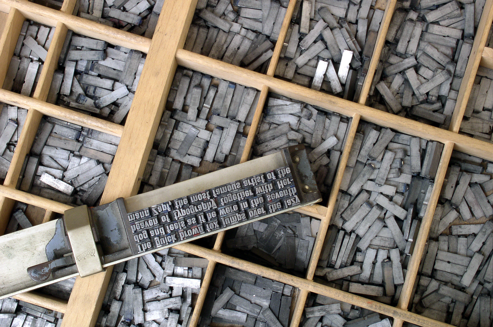

The charset element
Connections between character encoding and print media
The character encoding systems in use today can trace their origins to encoding systems that were originally print technology focused.
The non digital precursor to character encoding was the standards applied to the typefaces and typesets of the printing industry. Industry standards for what characters were included in hte typesets used by newspapers and books were initially manufacturer and country specific. Before the development of international mass media, typography standards for character sets deviated much more from country to country. Characters representing different letter pronunciations were tied to distinct linguistic principles that in an era of heightened nationalism (19th/20th Centuries) were also tied to cultural distinction. The post-war era saw a decline of country specific typesets and greater collaboration between governmental and industry groups for standardization of character sets. The globalization of media, both print and electronic, only further accelerated the need for character standards across borderd.
ASCII, which Unicode is backwards compatible with and was heavily incluenced by, was orinigally developed for electronic typewriters. By this time, the ISO (International Standards Organization) had already standardized most character sets for electronic writing, and the deviations in formats were more technical than stylistic. These writing tools, and the digital writing tools that followed, benefited from this breakdown in the use of characters as a marker of cultural distinction. Different formats were now a matter of technical compatability and not national identity.
Joe Becker created the first draft of Unicode after his ecperience with Xerox Character Code Standard (XCCS), the character encoding used by Xerox in their printers in the 1980's.